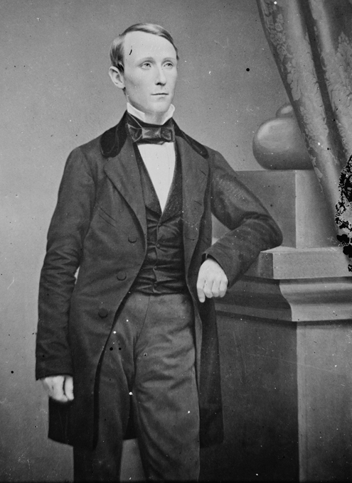
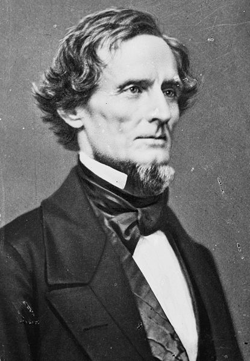

|
Filibustering was a term used in the antebellum period to
describe privately organized military expeditions into the
Caribbean and Central America in the 19th century. Though
most participants in filibustering expeditions of the 1840s
and 1850s were generally sympathetic to manifest destiny and
Southern pro-slavery extremism, filibustering also attracted
men who hoped to make their fortunes or who simply needed
work.
The most famous of the filibusters was Tennesseean
William Walker. While studying medicine in Europe, Walker
was deeply influenced by the first flowering of European
|

William Walker, whose filibustering activities ultimately
led to his execution
|
revolutionary nationalism. Though he briefly practiced
medicine, he became an impassioned advocate of further U.S.
expansion into Mexico, resolving that if the United States
government would not build on its successes in the Mexican
War, he would do so personally.
Moving to San Francisco in the early 1850s, Walker made
good on his commitment. He gathered a volunteer force,
journeyed south, and took control of the northwestern
Mexican town of La Paz. There he proclaimed the
establishment of the Republic of Lower California. When
Mexican forces threatened his position in La Paz, Walker
moved his men north to Ensenada, declaring that he had
founded the Republic of Sonora. Though Mexico had abolished
slavery, Walker's would-be countries both protected it.
The United States government, wary of renewing its
divisive conflict with Mexico, did not provide Walker with
any assistance. Desertions, poor organization, and harsh
conditions all undermined Walker's efforts. Finally, Walker
fled Mexico. U.S. officials sympathetic with Walker's
venture saw to it that the federal government did not charge
Walker with any crime.
Several years later, Walker led another expedition, this
time to intervene in a Nicaraguan civil war. Victories
there led Walker to declare himself Nicaragua's President.
To the delight of Southern plantation owners, Walker
repealed the country's antislavery laws. Southern advocates
of manifest destiny now spoke of annexing Nicaragua and
perhaps all of Central America.
While Walker's pro-slavery stance thrilled many
Southerners, it infuriated most Nicaraguans and deeply
concerned other Central Americans who feared that Walker-or
the United States itself-might threaten the entire isthmus.
Walker made his situation more precarious when he angered
railroad financier Cornelius Vanderbilt. Vanderbilt had
contracted with Nicaragua's previous government to build and
manage a railroad that would carry passengers and freight
between Nicaragua's Caribbean and Pacific coasts. Believing
that the contract had benefited Vanderbilt more than it had
Nicaragua, Walker canceled the arrangement. When Costa Rica
declared war against Walker's Nicaragua, Vanderbilt lent his
support. In 1857, Walker was forced out of Nicaragua.
Walker's Nicaraguan adventure deeply divided American
officials. Some, like Secretary of War Jefferson Davis,
|

Though he could not officially endorse
filibustering, Senator and Secretary of War Jefferson Davis
privately applauded the practice.
|
openly sympathized with Walker's objectives. Some
pro-slavery officials saw Walker as taking the first
necessary steps towards the U.S. conquest of the entire
Caribbean, creating a "golden circle" of slavery.
At the same time, a number of American politicians, even
those sympathetic to the expansion of slavery within U.S.
territory, worried that Walker and other filibusterers might
entangle the United States in dangerous conflicts, not only
with Latin American and Caribbean states, but with Britain
and France. In addition, the prospect of an aggressively
expanding "slaveocracy" hardened antislavery opinion in the
North and contributed to the growth of the new Republican
Party. It was for such reasons that President James
Buchanan, a Pennsylvania Democrat allied with pro-slavery
Southerners, ultimately refused U.S. support for Walker.
Walker returned to Central America twice, but each time
was repulsed. After his last incursion, into Honduras,
Walker surrendered to a British naval commander, who turned
the prisoner over to Honduran authorities. In 1860, the
Hondurans executed Walker before a firing squad.
With a Union victory in the Civil War, much of the
impetus for filibustering ended. Though some American
politicians continued to harbor ambitions for Central
America and the Caribbean, privately financed attacks
ceased. For the peoples of Central America and the
Caribbean, however, the image of Americans shooting their
way into power persisted, influencing their response to
American intervention in regional affairs well into the 20th
century.
Source: Joan Waugh, ed., Facts on File Encyclopedia of American
History: Civil War and Reconstruction, 1856 to 1869 (New York: Facts on
File, 2003), 126-127.
|